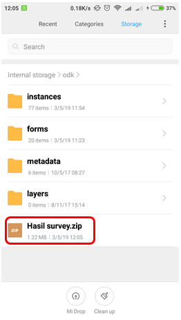

Menggunakan Aplikasi ODK Collect
Tujuan Pembelajaran:
- Mampu menjelaskan ODK Collect sebagai salah satu alat mengambil data infrastruktur
- Mampu mengoperasikan cara pengaturan awal untuk aplikasi ODK Collect
- Mampu menerapkan cara penggunaan ODK Collect untuk pengumpulan data survei
I. Apa itu ODK Collect
Open Data Kit Collect (ODK Collect) merupakan aplikasi pengumpulan data di lapangan berbasis android. ODK Collect dapat menggantikan formulir survei dalam bentuk kertas menjadi bentuk digital. Oleh karena itu, aplikasi ini dapat membantu kegiatan pemetaan dan pengumpulan data di lapangan yang juga memungkinkan menyimpan informasi lokasi dan foto sekaligus.
II. Pengaturan awal untuk ODK Collect
a. Mengatur URL Server
Untuk mengambil formulir survei dari server untuk pertama kalinya, pengguna perlu mengatur URL server. Langkah-langkah mengatur URL server adalah sebagai berikut:
- Buka aplikasi ODK Collect dan tekan tombol titik tiga di pojok kanan atas, pilih General Settings → Server

- Ketikkan alamat Server URL pada pilihan isian URL → OK
b. Mengatur ukuran gambar
Selain titik lokasi, Anda juga dapat mengambil foto sebagai keterangan tambahan. Anda dapat mengatur resolusi gambar sesuai keinginan. Namun, resolusi gambar juga akan mempengaruhi jumlah kapasitas memori atau file yang akan di-upload ke server nantinya. Disarankan agar Anda memilih resolusi gambar terkecil saat pengaturan awal. Langkah-langkahnya adalah sebagai berikut:
- Tekan tombol titik tiga di pojok kanan atas dan pergi ke General Settings → Form Management.
- Pilih Image Size lalu pilih pilihan Very Small (640px).

III. Pengoperasian dasar ODK Collect
a. Cara mengambil formulir survei kosong dari server
Sebelum Anda mengisi formulir survei yang telah dibuat sebelumnya, Anda perlu mengambil atau men-download formulir survei kosong dari server yang telah ditentukan. Untuk penjelasan lebih lanjut tentang pembuatan formulir survei di ODK, Anda dapat mempelajari modul Membuat Form Survei untuk aplikasi ODK & OMK. Langkah-langkah untuk mengambil survei kosong dari server adalah sebagai berikut:
- Tekan Get Blank Form dan tunggu formulir ter-download dari server dan pastikan internet Anda telah aktif.

- Pilih formulir yang telah tersedia dengan tekan tanda centang di samping formulir atau jika memilih semua formulir pilih Select All. Jika formulir Anda tidak muncul, Anda dapat tekan Refresh untuk memuat ulang halaman.
- Setelah Anda memilih formulir yang diinginkan, Anda dapat tekan Get Selected untuk men-download formulir yang sudah terpilih.
b. Mengisi formulir survei
- Untuk mengisi formulir, kembali ke halaman awal dan pilih menu Fill Blank Form. Lalu pilih salah satu formulir kosong yang ingin Anda isi pada daftar formulir survei.

- Geser layar ke kanan atau ke kiri untuk berpindah halaman pengisian formulir dan untuk berpindah ke isian formulir selanjutnya. Pertanyaan yang mempunyai tanda bintang merah di sisi kiri atas merupakan pertanyaan yang wajib diisi dan tidak dapat dilewati apabila jawaban kosong.
- Anda dapat mengambil foto langsung dengan tekan pilihan Take Picture atau pilih foto dari galeri foto Anda dengan memilih pilihan Choose Image.
- Untuk menambahkan titik lokasi objek sekaligus tag OSM pada objek, Anda dapat menggunakan aplikasi tambahan yaitu OpenMapKit (OMK). Anda dapat langsung beralih ke aplikasi OMK dengan cara menekan tombol Launch OpenMapKit pada formulir. Anda dapat mempelajari penggunaan aplikasi OMK lebih lanjut pada modul Menggunakan Aplikasi OpenMapKit.
- Di akhir formulir Anda dapat memberi nama pada formulir, beri centang Mark form as finalized dan di akhir tekan Save Form and Exit untuk finalisasi akhir formulir survei.
c. Mengubah formulir survei yang sudah diisi
Formulir yang telah disimpan akan otomatis tersimpan pada aplikasi ODK Collect. Apabila Anda ingin mengedit kembali formulir yang telah diisi Anda dapat melakukan langkah sebagai berikut:
- Anda dapat kembali ke halaman awal dan tekan pilihan Edit Saved Form.

- Pilih formulir dengan cara tekan pada formulir yang akan Anda ubah dan lakukan perubahan pada formulir tersebut.

- Setelah itu, simpan formulir dengan cara tekan ikon disket untuk simpan perubahan pada formulir survei.
d. Mengupload formulir survei ke server
Setelah Anda mengisi dan menyimpan formulir, langkah selanjutnya ialah meng-upload atau upload formulir tersimpan ke server. Langkah-langkah untuk meng-upload formulir ke server adalah sebagai berikut:
- Untuk meng-upload formulir survei kembali ke server, Anda dapat memilih pilihan Send Finalized Form pada halaman awal.
- Pada halaman tersebut tersimpan formulir survei yang telah disimpan dan siap dikirim. Anda dapat memilih Select All untuk memilih semua formulir terlebih dahulu.
- Pastikan Anda telah terhubung di internet. Lalu tekan Send Selected dan tunggu sampai proses upload formulir selesai.
- Semua formulir yang telah berhasil ter-upload akan tersimpan di menu pilihan View Sent Form dan ikon formulir sudah berubah warna menjadi hijau.

- Setelah Anda selesai meng-upload formulir ke server, Anda dapat menghapus formulir pada menu pilihan Delete Saved Form.

- Anda dapat menghapus formulir yang sudah diisi pada pilihan Saved Forms dan menghapus formulir yang kosong pada pilihan Blank Forms. Anda perlu memilih formulir yang akan dihapus atau pilih Select All untuk memilih semua formulir lalu tekan Delete Selected untuk menghapus formulir yang sudah terpilih.

- Selanjutnya Anda perlu mengkonfirmasi untuk menghapus formulir survei dengan tekan Delete Forms.

e. Meng-upload formulir survei ke Google Drive
Setelah Anda meng-upload semua formulir survei kembali ke server, Anda perlu menyimpan dan meng-upload file hasil survei dalam format .zip ke dalam folder di Google Drive yang telah dibuat oleh Mapping Supervisor. Langkah-langkahnya adalah sebagai berikut:
- Pergi ke File Manager atau File Explorer pada smartphone Anda dan buka penyimpanan internal Anda. Kemudian buka folder dengan nama odk yaitu folder yang berisikan semua file hasil survei yang tersimpan pada aplikasi ODK Collect. Lalu tekan folder instances yang berisi folder yang didalamnya terdapat file *.osm objek hasil survei.

- Sebelum memindahkan folder instances ke dalam folder komputer Anda, Anda perlu mengubah folder instances tersebut menjadi format .zip dengan cara tekan pada folder instances dan tekan Compress dan Anda dapat ubah nama file .zip tersebut.

- Setelah itu Anda dapat memindahkan file .zip ke dalam komputer dan Anda dapat meng-upload file tersebut ke folder Google Drive yang telah disediakan oleh Mapping Supervisor.

- Anda dapat meng-upload file ke folder Hasil survei dengan cara klik kanan pada mouse lalu pilih Upload Files dan pilih file yang ingin Anda upload.
RINGKASAN
Jika Anda dapat mengikuti dan memperhatikan seluruh tahapan dalam bab ini, maka Anda telah berhasil memahami penggunaan aplikasi ODK Collect sebagai salah satu alat untuk pengumpulan data di lapangan. Selain itu, Anda juga telah berhasil menerapkan pengoperasian cara pengaturan awal ODK Collect dan cara penggunaan ODK Collect untuk mengambil data lapangan. Nantinya, Anda akan mempelajari alat pengumpulan data di lapangan yang lain yaitu aplikasi OpenMapKit (OMK).